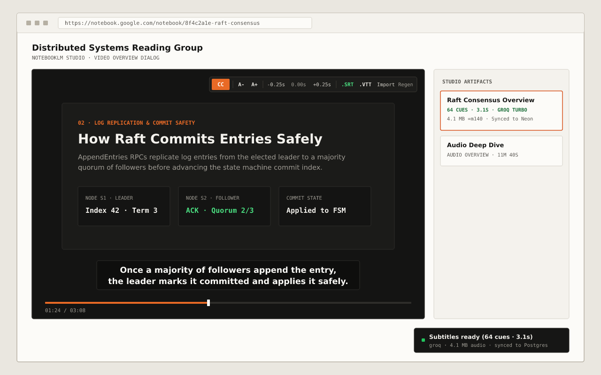
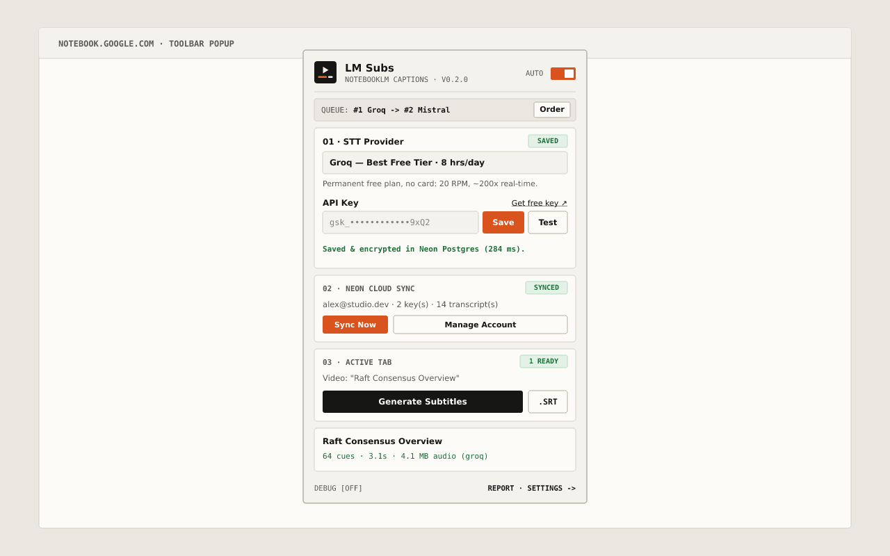
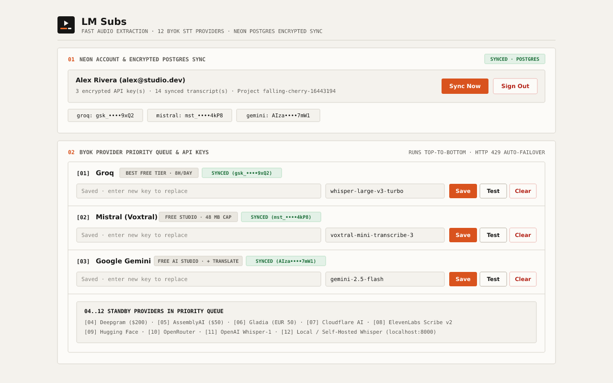
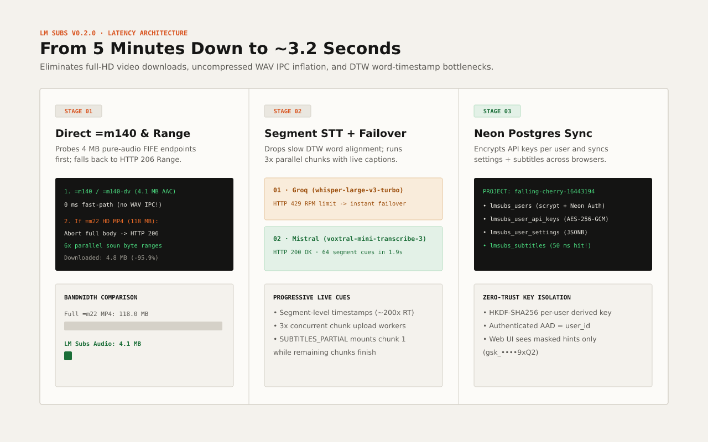

Sub-5-second captions & encrypted Neon sync for NotebookLM Video Overviews.
Google NotebookLM renders narrated Video Overviews without closed captions or transcript downloads.
LM Subs fetches the compact AAC audio stream directly (or pulls only soun
byte ranges via HTTP 206), transcribes via 12 BYOK providers, and syncs your encrypted API keys and
subtitles across devices with Neon Lakebase Postgres.
Distributed Consensus & Raft
Account Authentication
Backed by Neon Lakebase Postgres (falling-cherry-16443194). Passwords use salted scrypt; API keys use per-user HKDF-SHA256 + AES-256-GCM.
Synced BYOK API Keys & Transcripts




| Queue Rank | Default Model | Free Allowance / Billing | Timestamp Mode |
|---|---|---|---|
| 01 · Groq | whisper-large-v3-turbo | Free · No Card 8 hrs audio/day, ~200x real-time | Fast Segment |
| 02 · Mistral (Voxtral) | voxtral-mini-transcribe-3 | Free Studio Experiment tier, 48 MB upload cap | Segment |
| 03 · Google Gemini | gemini-2.5-flash | Free AI Studio Daily quota + optional translation | Direct SubRip (.srt) |
| 04 · Deepgram | nova-3 | $200 Credit No card (~700+ hrs pre-recorded audio) | Utterance + Word |
| 05 · AssemblyAI | universal | $50 Credit ~330 hrs Universal-2 batch audio | Millisecond Word |
| 06 · Gladia | solaria-1 | EUR 50 Credit ~80+ hrs Solaria pre-recorded audio | Native SRT |
| 07 · Cloudflare Workers AI | @cf/openai/whisper-large-v3-turbo | 10k Neurons/day Daily free Cloudflare allowance | WebVTT + Segment |
| 08 · ElevenLabs | scribe_v2 | 10k Credits/mo ~30 min/month free on Scribe v2 | 90+ Lang Word |
| 09 · Hugging Face | openai/whisper-large-v3-turbo | Free HF Token Monthly Serverless Inference quota | Chunk Timestamps |
| 10 · OpenRouter | mistralai/voxtral-mini-transcribe | Unified BYOK router across Voxtral & Whisper | Segment |
| 11 · OpenAI Whisper | whisper-1 | Pay-as-you-go ($0.006 / minute) | Fast Segment |
| 12 · Local / Custom Whisper | Systran/faster-whisper-small | 100% Offline speaches, whisper.cpp, faster-whisper | Local Segment |
Load Unpacked in Chrome
Download and unzip lm-subs-v0.2.0.zip (or run npm run build), open
chrome://extensions, enable Developer mode, and select the
extension/ directory.
npm install npm run build # Load ./extension in chrome://extensions
Provision Neon Branch
neon.ts declares Neon Managed Auth and Lakebase Postgres. Authenticate once in your browser,
deploy resources to production, and apply db/schema.sql.
neon login neon deploy --env .env.local npm run db:migrate
Run Locally or Deploy
Start the unified web & Hono sync server locally on port 4173, or deploy straight to
Vercel where api/[...route].js connects to DATABASE_URL automatically.
npm start # Web + Sync API -> http://localhost:4173